Vue globale
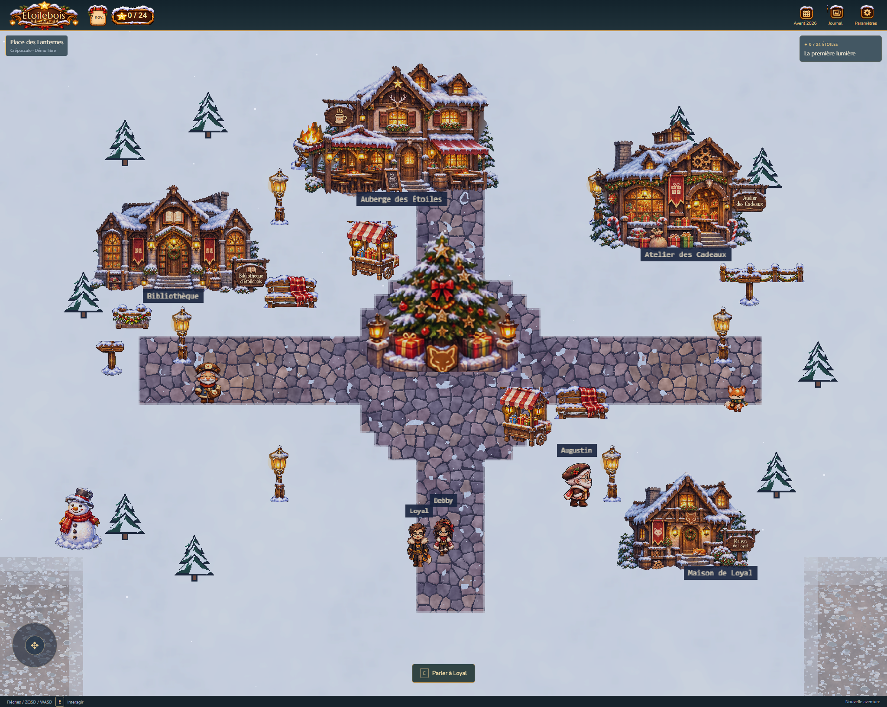

Captures réelles du jeu. HUD et dialogues conservés. Le téléphone D.2 dispose d'un champ de caméra plus large. Les façades de mairie, boulangerie et poste restent absentes du pack.



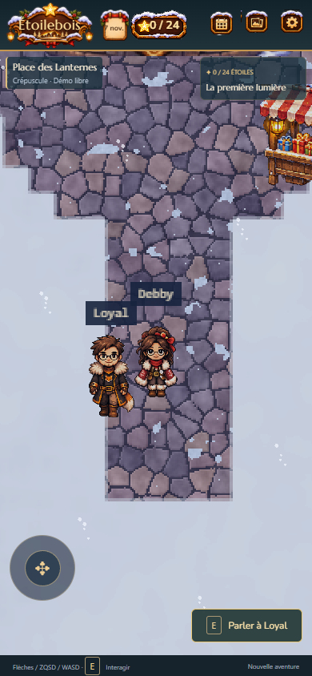

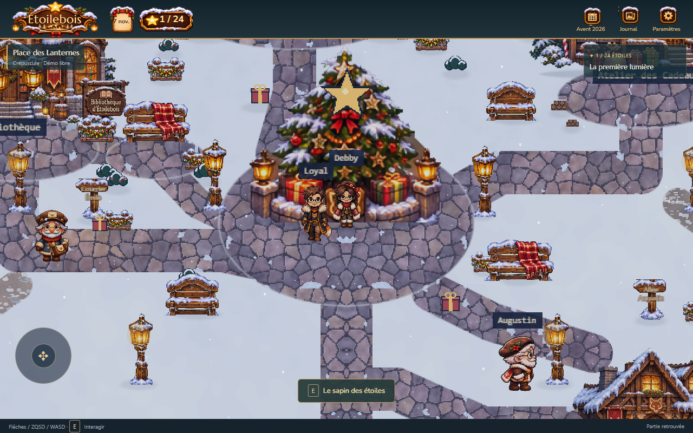
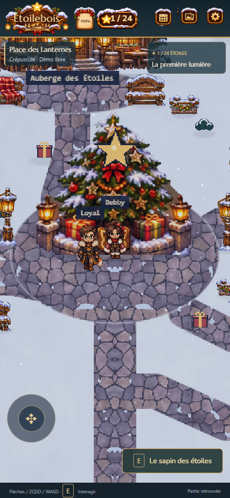
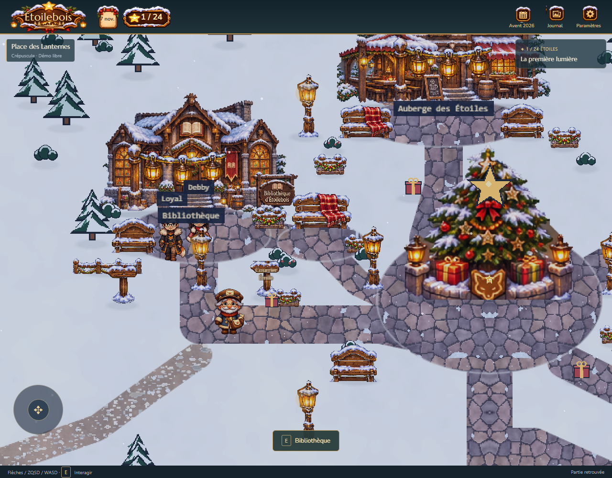
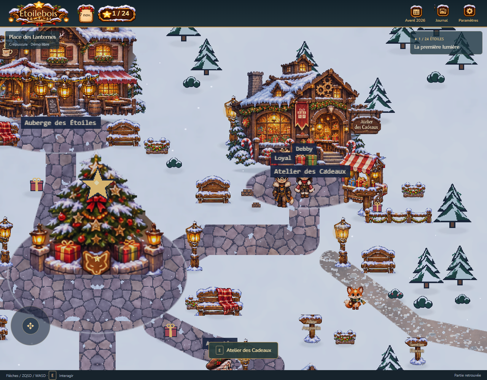
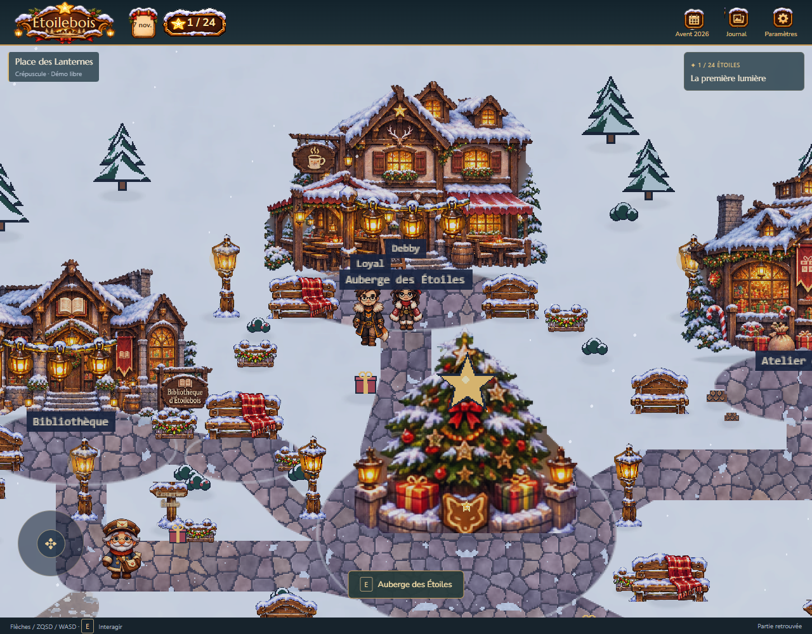
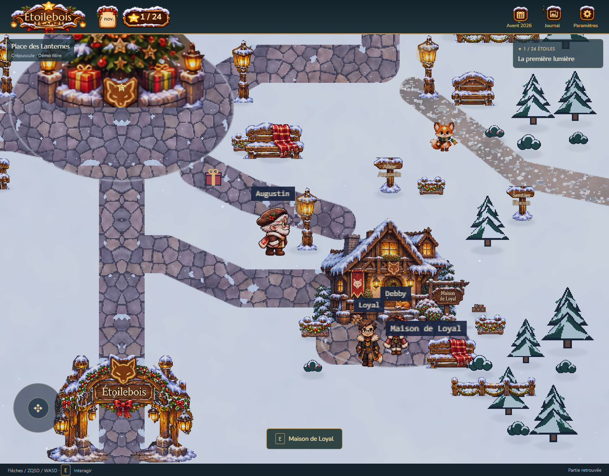
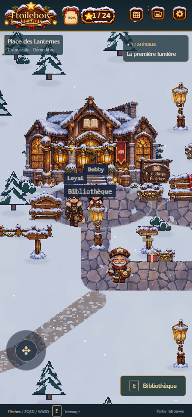
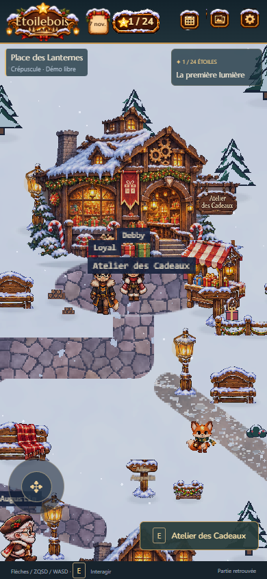
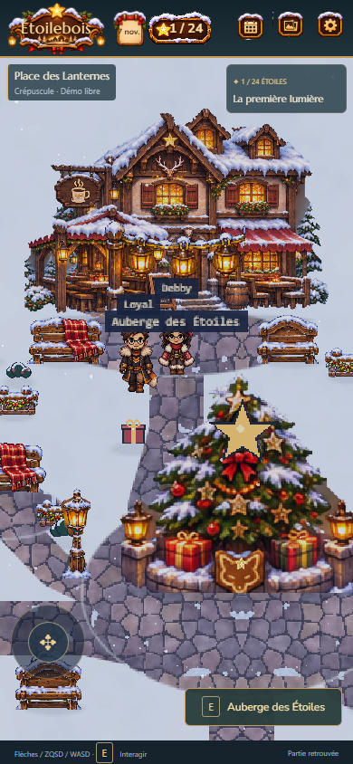
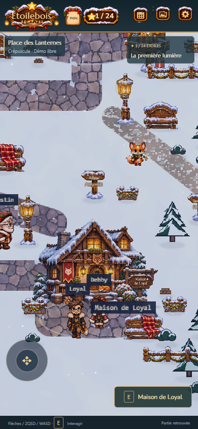
Rapport et limites · Inventaire des ressources et placements